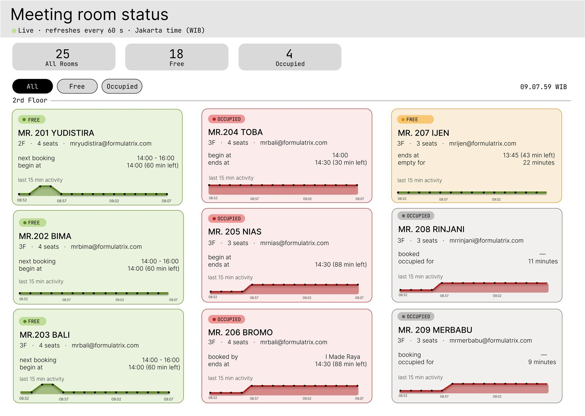
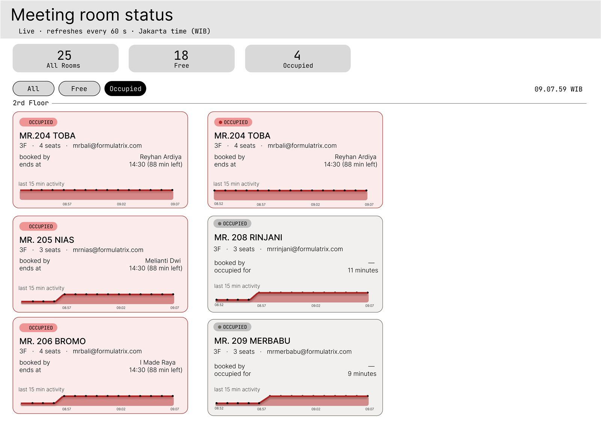
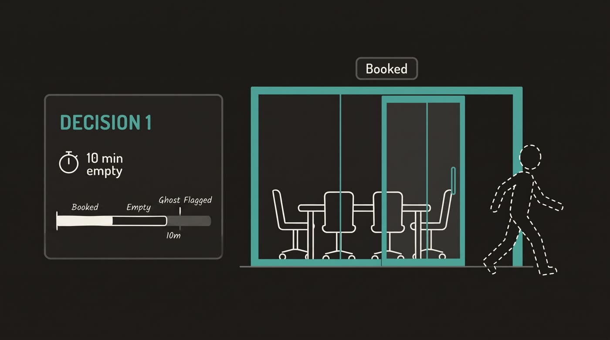
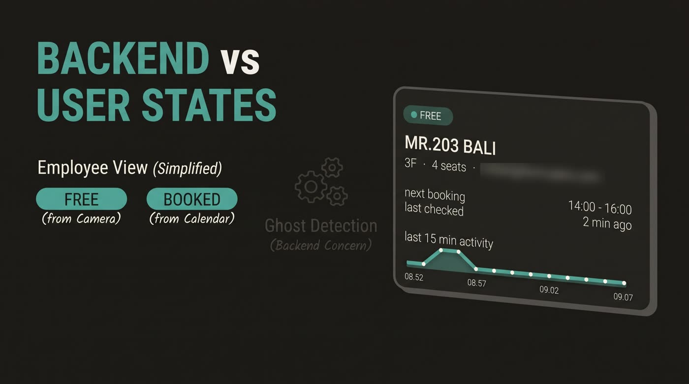
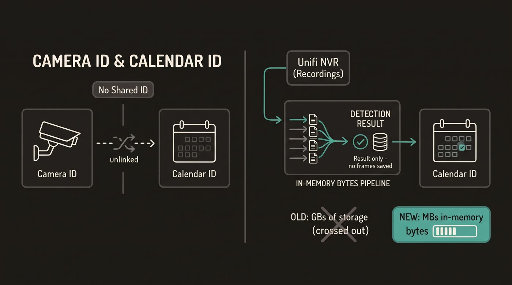
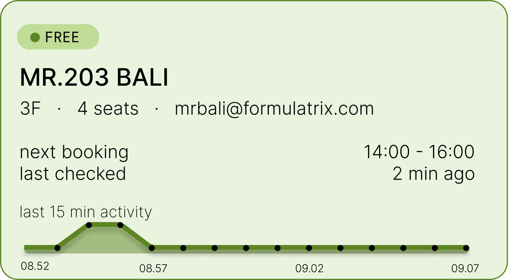

Case study
Turning ghost bookings into information employees can trust.
A monitoring dashboard for meeting room occupancy. AI-based detection checked against the calendar, so the booking system stops lying about which rooms are actually free.


The three states
What the dashboard reports
FREE
No booking, no one inside. Safe to walk in.
OCCUPIED
In use. Shows who booked it and when it ends, or how long it has been occupied with no booking at all.
GHOST
Booked but empty for long enough to count. A forgotten cancellation or a meeting that moved, holding a room hostage.
The problem
The calendar said booked. The room was empty.
Ghost bookings (forgotten cancellations, meetings that moved elsewhere) plus squatter situations, where a room is occupied without a reservation, made the calendar untrustworthy. Employees stopped believing it and walked floor by floor looking for a real vacancy instead.
Live camera feeds were considered and rejected. A feed answers “who's inside”, when the question an employee is actually asking is “can I use this room”. Solving the second question without answering the first became the constraint the whole system was built around.
The solution
Four decisions that make the answer trustworthy
Three-state classification
Free, Occupied and Ghost. Booked and in-use are tracked as separate facts, so a mismatch between them becomes visible instead of invisible.
10-minute Ghost confirmation
An empty booked room isn't flagged straight away. The window absorbs people stepping out, so a Ghost flag means something.
Snapshots deleted after classification
Privacy by design. The image exists long enough to produce a state and no longer. No feed, no archive of who was in the room.
Room-level activity history
Every card carries the last 15 minutes of activity, so facilities can read a pattern rather than react to a single moment.
Background
A booking system nobody trusted cost real working time
Ghost and squatter bookings produced a specific, repeated cost: employees losing time searching for a room that the calendar had already told them was unavailable. Once the calendar has been wrong a few times, people stop checking it and start walking the floors, which is slower for them and hides the problem from anyone who could fix it.
Nothing in the existing setup could distinguish a room that was booked from a room that was being used. Both looked identical in the booking data, so neither failure mode could be measured, let alone addressed.
BOOKING SOURCE
Google Calendar
OCCUPANCY SOURCE
Unifi Protect cameras
DETECTION
AI-based, on snapshots
AUDIENCES
Employees and facilities management
Research
Decisions came from the people running the room, not a discovery phase
Input came from the team lead, the IT department, the calendar owner and a colleague review.
DECISION 1
Ghosts are flagged only after 10 minutes empty
10 consecutive minutes empty while booked, before it counts as a ghost.
Still trigger a ghost even if someone left early and the booking hasn't officially ended.

DECISION 2
Employees only need free or booked. Ghost detection is a backend concern
Simplify the dashboard to two employee-facing states: Free, from the camera, and Booked, from the calendar.
Show a 15-minute history line per room card, so viewers see the pattern, not just the instant.

DECISION 3
What could be built was decided by the infrastructure already in place
A camera ID per room, mapped separately from its calendar ID. The two systems don't share an identifier.
The Unifi NVR already keeps its own recordings, so the detection result is sufficient and no frames need storing.

DECISION 4
The obvious model choice turned out to be a licensing problem, not a technical one
Using the SSD MobileNetV1 model: Apache 2.0, free for commercial use.
No GPU on the deployment server, so the model has to run efficiently on CPU alone.
ONE DECISION WORTH KEEPING VISIBLE
Why OrganizerEmail and RoomId are duplicated instead of joined
A colleague reviewing the design flagged it as a normalisation violation. The duplication is intentional: DetectionResult is a self-contained verdict that must stay readable even if the source booking is later rescheduled or deleted. At nine rooms and one verdict a minute, the join cost was negligible next to that guarantee.
Define
How might we tell employees a room's real availability without exposing who's inside it?
EMPLOYEES
Looking for a room right now. They need one reliable answer per room and nothing else.
FACILITIES STAFF
Monitoring compliance. They need the pattern over time, not just the current state.
These two user types come from knowing who uses the dashboard, not from research, so I've left them as a plain statement rather than dressing them up as personas.
Ideation
Each pain point turned into one mechanism
Calendar data on its own can't detect either failure. A booking record looks the same whether the meeting happened or not. Only camera-based detection compared against the calendar can tell you the two disagree.
A binary booked/free model was rejected for the same reason: it has nowhere to put a mismatch. Ghost exists as a state precisely because it is the case where the calendar and the room disagree.
Design
One colour per state, one badge per room
Each room is a card with a status badge, and the whole card is tinted to match, so a floor reads as a block of colour before anyone reads a word of it. Monospaced numerals for times and counts keep the figures aligned down each column.
Accessibility is the honest weak point: state is carried by colour and a text badge, but the two mismatch cases in the earlier build used the same badge word with a different tint, which colour alone cannot safely distinguish.

Engineering
One writer per table, one job per class
Backend built end to end in C# .NET 8 over about 20 working days: architecture, database, AI integration, API, and the dashboard frontend.
- External sources
- →
- Background workers
- →
- Services
- →
- Data layer
- →
- API + dashboard
Each layer talks only to its neighbours. Only one component, GhostBookingDetector, is allowed to read both the camera table and the calendar table and produce a verdict.
Interfaces before implementations
Four interfaces (camera, calendar, detection, notification) were defined before any real service existed. Each got a mock implementation, so the pipeline was built and tested before Unifi credentials or calendar IDs arrived. Swapping mock for real was a one-line change in Program.cs.
9 rooms in 9 seconds, not 81
Each Unifi snapshot call takes about 9 seconds. Run sequentially across 9 rooms, one 60-second cycle would already be behind schedule. Task.WhenAll runs all 9 in parallel, so a full cycle still fits inside the interval.
Three tables, one writer each
CameraDetections, CalendarBookings and DetectionResults each have exactly one class allowed to write to them. A repository pattern keeps every other service ignorant of SQLite or EF Core.
Nothing touches disk
JPEG bytes go from the Unifi API through OpenCV decoding to an ONNX tensor entirely in RAM, then fall out of scope for garbage collection. Person detection runs on SSD MobileNetV1, chosen for its Apache 2.0 licence and CPU-only inference.
Testing & iterations
Person-detection evaluation
The detector was scored against 6,169 hand-labelled frames from 17 room recordings (4,753 with a person, 1,416 empty), swept across confidence thresholds from 0.1 to 0.9.
| Setup | Precision | Recall | F1 | False alarms | Missed people |
|---|---|---|---|---|---|
| Full frame, threshold 0.3 | 98.4% | 91.5% | 94.8% | 73 | 406 |
| Full frame, threshold 0.5 | 98.2% | 83.6% | 90.3% | 73 | 781 |
| Region of interest, first attempt | 100% | 73.7% | 84.9% | 0 | 1,249 |
| Region of interest, final | 100% | 89.6% | 94.5% | 0 | 494 |
The detector is cautious: it misses people more often than it invents them. Precision stayed at about 98% or higher at every threshold, while recall fell from 91% to 13% as the threshold rose. A low threshold (0.3) gave the best F1 and was kept.
Missed people matter more than false alarms here. A missed person looks like an empty room, which could start a false Ghost flag. That is a reason the 10-minute window of consecutive empty readings matters, and I have not yet measured how well it covers these misses.
All 73 false alarms came from one lobby camera. A region-of-interest filter removed them, at the cost of 88 more missed people, so F1 dropped only from 94.8% to 94.5%.
The first region-of-interest attempt was wrong. It cut out four rooms entirely (741 people frames, all missed), dropping F1 to 84.9%. Redrawing the polygons fixed it.
Misses are concentrated, not random. Of 406 misses at threshold 0.3, 274 came from one room and 77 from another, so the weak spot is specific camera angles rather than the model as a whole.
Limits of this evaluation: one room supplies about half of all frames (3,008 of 6,169), so the overall figures lean on it. Frames were taken at 5 per second from screen recordings, so neighbouring frames are near-duplicates, not independent samples. The results show how the detector performs on this footage, not on every room or lighting condition.
WHAT STAYED UNVALIDATED
No usability testing was run. The 10-minute confirmation window in particular is a judgement call about how long someone might reasonably step out of a meeting, not a tested threshold. It's the single number deciding whether a Ghost flag gets trusted or ignored.
Result & final thoughts
A room's status is now a fact, not a claim
Comparing two systems that already existed, the calendar and the cameras, produced something neither could report alone: whether a booking matches reality. Ghost bookings became measurable instead of anecdotal.
The decision I'd defend hardest is deleting the snapshot. It costs the system nothing an employee needs, and it's the difference between a room-availability tool and something people feel watched by.
Validate the 10-minute window against real occupancy data instead of intuition.
Give Ghost a non-colour cue as well, so the state survives a colour-blind viewer or a washed-out wall display.
Revisit whether the squatter case deserves a home somewhere in the facilities view, even if not on the employee-facing card.